R
nchar(ieugwasr::get_opengwas_jwt()) > 0 # should be TRUE
ieugwasr::user() # should show your OpenGWAS user details
We will use the TwoSampleMR package to assess the causal effect of type 2 diabetes on coronary artery disease.
Briefly, the workflow of a Two-Sample MR is as follows (see also diagram below):
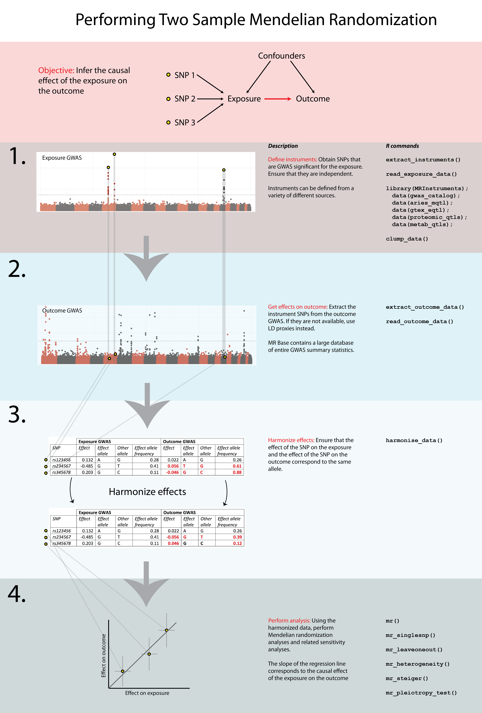
TwoSampleMR retrieves instruments, outcome data and LD information from the IEU OpenGWAS database through the ieugwasr package. Since May 2024 every request must be authenticated with a personal token, and each user has a limited number of queries. You set up your token in Section 5.12; if you have not done that yet, do it first. Then check that it still works:
R
nchar(ieugwasr::get_opengwas_jwt()) > 0 # should be TRUE
ieugwasr::user() # should show your OpenGWAS user detailsget_opengwas_jwt() returns an empty string. R did not find your token. Restart R first. Still empty? The file is probably not where R looks for it: always open it with usethis::edit_r_environ(), which opens the right file, and check that the line reads OPENGWAS_JWT=<token> without spaces or quotes and that the file ends with an empty line..Renviron, and restart R.TwoSampleMR and ieugwasr do not support the token: re-install them as shown below.OpenGWAS limits the number of queries per user. Run the code in this chapter step by step, keep the results in objects, and do not re-run the whole chapter over and over again.
Make sure you have up-to-date versions; old versions of TwoSampleMR and ieugwasr do not support the token. TwoSampleMR and MRInstruments are installed from the MRC IEU R-universe.
R
install.packages(c("TwoSampleMR", "MRInstruments"),
repos = c("https://mrcieu.r-universe.dev", "https://cloud.r-project.org"))
install.packages("ieugwasr")Now load the packages.
If you cannot use OpenGWAS, the same analysis can be done fully offline: read exposure and outcome summary statistics from files with read_exposure_data() and read_outcome_data(), and clump locally with ieugwasr::ld_clump(..., plink_bin = "plink", bfile = "<1000G EUR reference>") instead of clump_data(). See the TwoSampleMR documentation.
We are ready to load in the available outcomes.
R
ao_twosamplemr <- available_outcomes()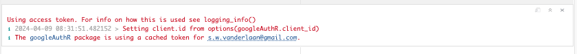
The MRInstruments-package, which comes with TwoSampleMR, includes several types of instruments:
Let’s select T2D associated instruments.
R
data("gwas_catalog")
t2d_gwas <- subset(gwas_catalog, grepl("Mahajan", Author) & PubmedID == "24509480" & Phenotype == "Type 2 diabetes")
t2d_exp_dat <- format_data(t2d_gwas)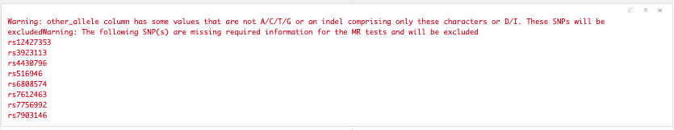
Like with identifying independent GWAS hits, it is important for TwoSampleMR to ensure that the instruments for the exposure are independent. We can use MR Base to perform clumping. The European samples from the 1000 genomes project are used to estimate LD between SNPs. You can provide a list of SNP IDs, the SNPs will be extracted from 1000 genomes data, LD calculated between them, and amongst those SNPs that have LD R-square above the specified threshold only the SNP with the lowest P-value will be retained. To do this, use the following command.
R
t2d_exp_dat <- clump_data(t2d_exp_dat)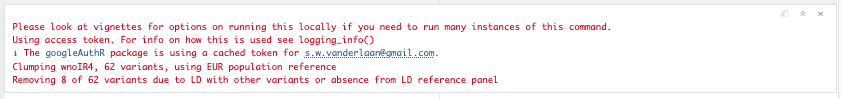
Right, so now we are ready to select the proper outcome, CAD. There are multiple datasets available in MRBase, the database used by TwoSampleMR. Let’s review them all and select one with the largest overlap with our exposure SNPs.
R
ao_twosamplemr[grepl("heart disease", ao_twosamplemr$trait), ]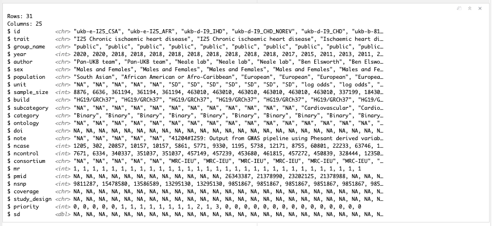
It turns out there are several options listed below.
| Code | Year | Author | Description | Ncases | Ncontrols |
|---|---|---|---|---|---|
| ukb-d-I9_IHD | 2018 | Neale Labe | Ischaemic heart disease, wide definition | 20857 | 340337 |
| ukb-d-I9_CHD_NOREV | 2018 | Neale Labe | Major coronary heart disease event excluding revascularizations 10157 351037 | ||
| ieu-a-7 | 2015 | Nikpay et al. | Coronary artery disease | 60801 123504 | |
| ieu-a-9 | 2013 | Deloukas et al. | Coronary artery disease | 63746 130681 | |
| ieu-a-8 | 2011 | Schunkert et al. | Coronary artery disease | 22233 | 64762 |
We will use the ieu-a-7 dataset as this provides the latest and the greatest, but at the same time (when you go into the literature and dig up the publication) you need a good and sharp definition of the outcome you are interested in.
R
chd_out_dat <- extract_outcome_data(
snps = t2d_exp_dat$SNP,
# outcomes = "UKB-a:534" # - this one is deprecated, use the one below
# Deprecated IDs being used? Detected numeric IDs. Trying to fix, but please note the changes below for future.
# UKB-a:534 -> ukb-a-534
outcomes = "ieu-a-7"
)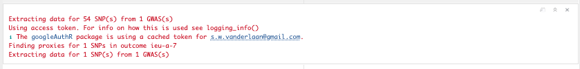
It is important to make sure that the effect allele associated to T2D of any given SNP is the same as the effect allele associated CAD. In other words, we need to harmonise the data.
R
dat <- harmonise_data(
exposure_dat = t2d_exp_dat,
outcome_dat = chd_out_dat
)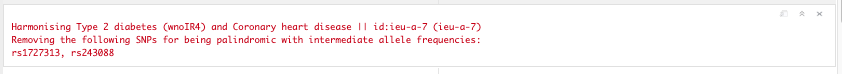
Now that the data is harmonised, we are ready to perform a MR and test for a causal relation of T2D with CAD.
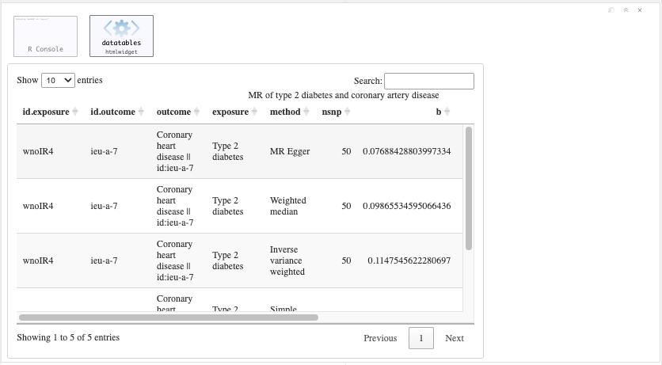
Question: What is the causal effect of T2D on CAD? Can you describe this using the knowledge from the lecture and the results in the table.
Several tests are applied. You can change the method(s) applied by using the method_list flag. Below a list of available methods.
| obj | name | PubmedID | Description | use_by_default | heterogeneity_test |
|---|---|---|---|---|---|
| mr_wald_ratio | Wald ratio | TRUE | FALSE | ||
| mr_two_sample_ml | Maximum likelihood | FALSE | TRUE | ||
| mr_egger_regression | MR Egger | 26050253 | TRUE | TRUE | |
| mr_egger_regression_bootstrap | MR Egger (bootstrap) | 26050253 | FALSE | FALSE | |
| mr_simple_median | Simple median | 27061298 | FALSE | FALSE | |
| mr_weighted_median | Weighted median | 27061298 | TRUE | FALSE | |
| mr_penalised_weighted_median | Penalised weighted median | 27061298 | FALSE | FALSE | |
| mr_ivw | Inverse variance weighted | 24114802 | TRUE | TRUE | |
| mr_ivw_radial | IVW radial | 29961852 | FALSE | TRUE | |
| mr_ivw_mre | Inverse variance weighted (multiplicative random effects) | FALSE | FALSE | ||
| mr_ivw_fe | Inverse variance weighted (fixed effects) | FALSE | FALSE | ||
| mr_simple_mode | Simple mode | 29040600 | TRUE | FALSE | |
| mr_weighted_mode | Weighted mode | 29040600 | TRUE | FALSE | |
| mr_weighted_mode_nome | Weighted mode (NOME) | 29040600 | FALSE | FALSE | |
| mr_simple_mode_nome | Simple mode (NOME) | 29040600 | FALSE | FALSE | |
| mr_raps | Robust adjusted profile score (RAPS) | FALSE | FALSE | ||
| mr_sign | Sign concordance test | Tests for concordance of signs between exposure and outcome | FALSE | FALSE | |
| mr_uwr | Unweighted regression | Doesn’t use any weights | FALSE | TRUE | |
| mr_grip | MR GRIP | Allele coding invariant MR-Egger regression | FALSE | FALSE |
Many genetic variants are associated to multiple traits, thus pleiotropy is common and widespread in the human genome. This poses as an issue to tease apart causal relations in Mendelian randomisation. Vertical pleiotropy arises because a SNP influences one trait, which in turn influences another. We can use MR to estimate the causal influence between the traits. Horizontal pleiotropy arises due to SNPs influencing two traits through independent pathways(Hemani G. 2018).
Further, we should test for study heterogeneity.
R
mr_heterogeneity(dat)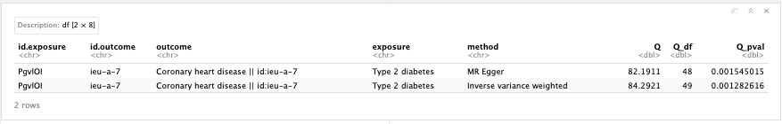
R
mr_pleiotropy_test(dat)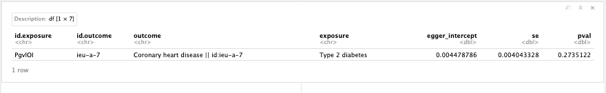
Question: What do the results of the heterogeneity and pleiotropy tests tell you?
It is also key to inspect the causal effects per SNP and perform a leave-one-out analysis.
R
res_single <- mr_singlesnp(dat)
DT::datatable(res_single, caption = "Single SNP MR analysis", rownames = FALSE)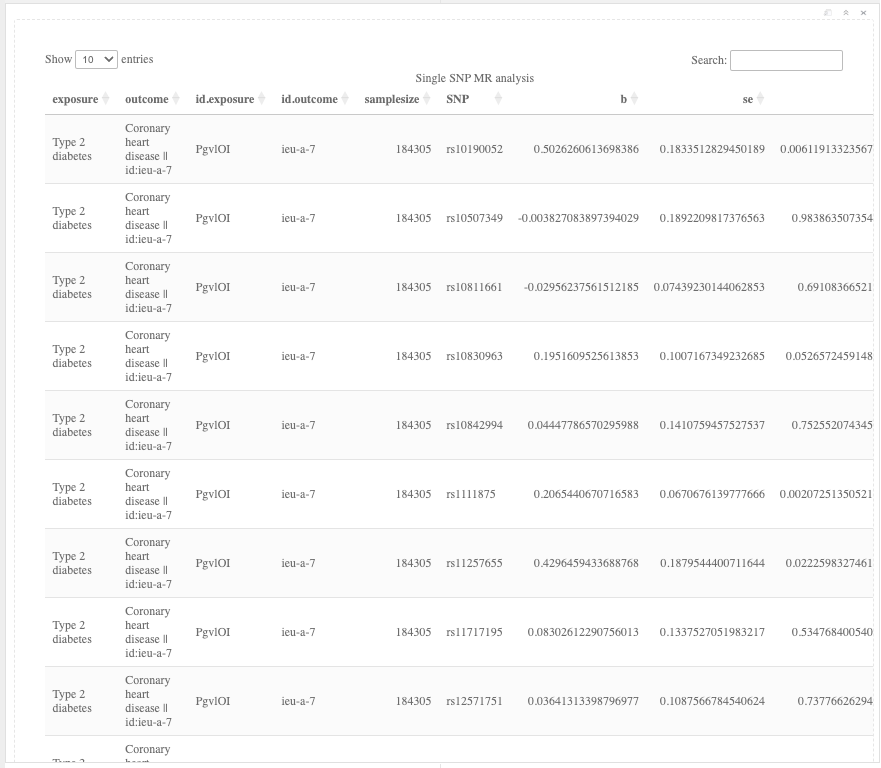
R
res_loo <- mr_leaveoneout(dat)
DT::datatable(res_loo, caption = "Leave-one-out MR analysis", rownames = FALSE)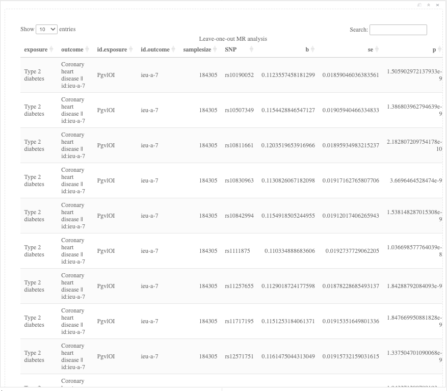
Question: What do the results of the single SNP and leave-one-out analyses tell you?
It is important to present the causal inference graphically.
Scatter plot
R
res <- mr(dat)
p1 <- mr_scatter_plot(res, dat)
p1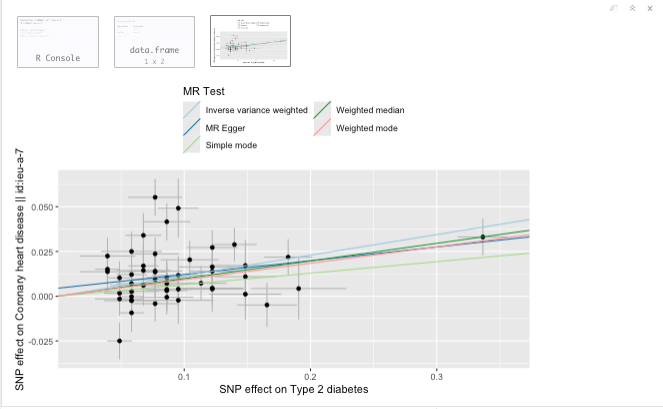
Question: What do you see in the scatter plot? And what can you conclude from this?
Single SNP plot
R
res_single <- mr_singlesnp(dat)
p2 <- mr_forest_plot(res_single)
p2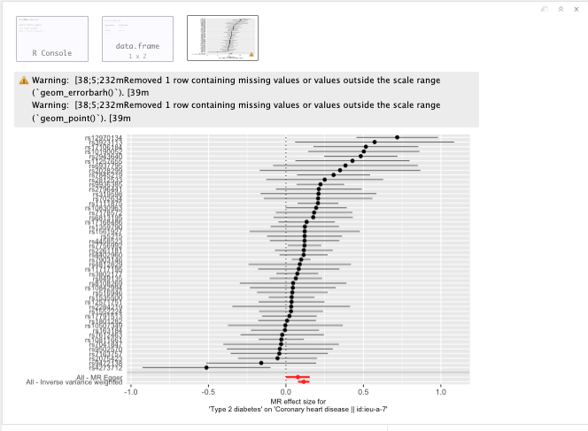
Question: What do you see in the forest plot? And what can you conclude from this?
Leave-One-Out plot
R
res_loo <- mr_leaveoneout(dat)
p3 <- mr_leaveoneout_plot(res_loo)
p3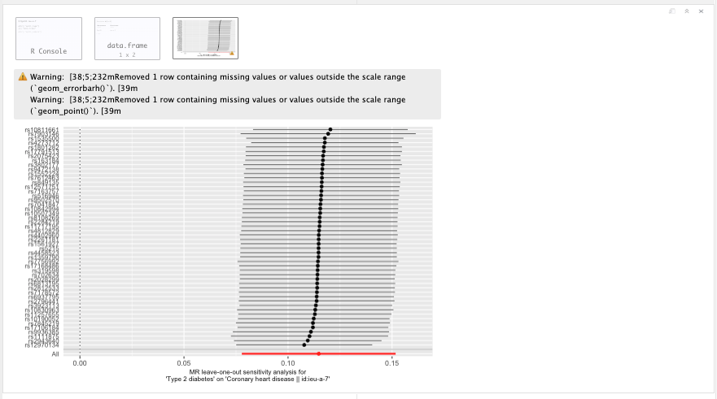
Question: what does a leave-one-out ploy tell you? And what can you conclude from this?
Funnel plot
R
res_single <- mr_singlesnp(dat)
p4 <- mr_funnel_plot(res_single)
p4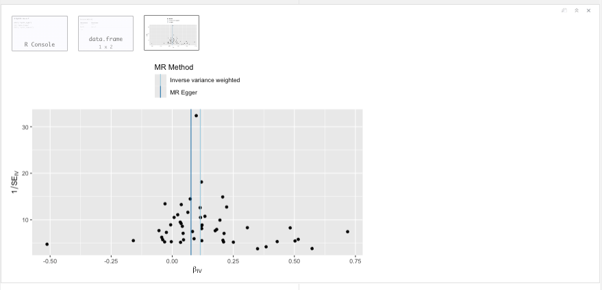
Question: Why would yoy use a funnel plot? And what can it tell you?
Question: What are your main conclusions from the MR analysis?
You are almost at the end. Time to return to the previous chapter on post-GWAS analyses Chapter 15.